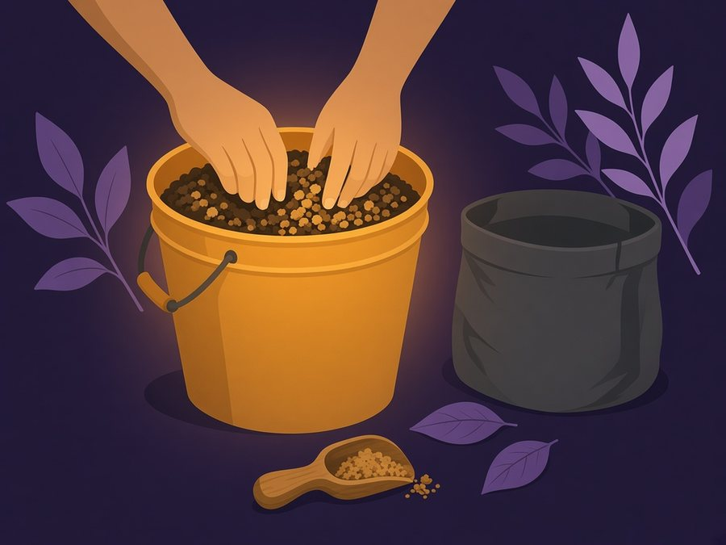
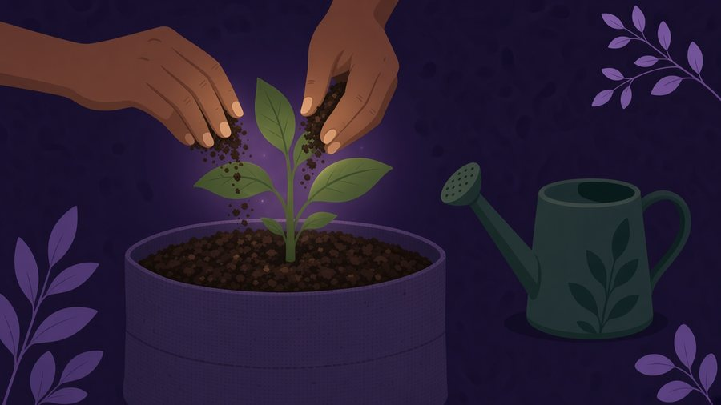

| Cups | Tablespoons |
|---|---|
| 1 cup | 16 Tbsp |
| ¾ cup | 12 Tbsp |
| ⅔ cup | ~10⅔ Tbsp |
| ½ cup | 8 Tbsp |
| ⅓ cup | ~5⅓ Tbsp |
| ¼ cup (your scoop) | 4 Tbsp |
| ⅛ cup | 2 Tbsp |
| 1 Tbsp | 3 tsp |
| Per bag (80 cups) | Amount | Share |
|---|---|---|
| Sunshine Mix #4 | 56 cups3½ gal | 70% |
| Quoddy Blend | 16 cups1 gal | 20% |
| Worm castings | 8 cups½ gal | 10% |
Let it "cook"
Let the wetted mix "cook" for 1-2 weeks before transplanting. Microbes (Dr. Earth includes beneficial microbes and mycorrhizae) break amendments into plant-available nutrients, and early nitrogen, heat, pH and moisture settle so seedling roots aren't burned. Keep it moist (not soggy), covered and warm; a little earthy smell is normal.
More bags?
Multiply every amount by the number of bags.
DR. EARTH, MIXED INTO EACH BAG
| Dr. Earth | Per bag | Scoops |
|---|---|---|
| Veg 4-6-3 | 10 Tbsp⅝ cup | 2.5 |
| Bloom 3-9-4 | 6 Tbsp⅜ cup | 1.5 |
- Mix the base soil (section 3).
- Blend in 10 Tbsp Veg + 6 Tbsp Bloom.
- Fill the bag to ~2 in below the rim.
- Water in. Rest 1-2 weeks, then plant.

Burnt or clawed tips early?
Veg is ~2.5× label. Drop toward 6-8 Tbsp next time.
Label rates, per 5 gal
Veg: ¼ cup (4 Tbsp). Bloom: ½ cup (8 Tbsp).
| Per bag | Amount |
|---|---|
| Seabird Guano0-11-0, 20% Ca | 5 Tbsp1¼ scoops |
| Langbeinite0-0-22, 10.8% Mg, 22% S | 2 Tbsp6 tsp, ½ scoop |
| Base soil mixSunshine + Quoddy + castings | ~13 cupsabout 0.8 gal |
TOP-DRESS PER BAG
- Take 5 Tbsp guano + 2 Tbsp langbeinite.
- Mix into ~13 cups of base soil.
- Scratch the top inch of the bag.
- Spread 1.5-2 in, off the stem.
- Water in gently.

That week
Ease off Dr. Earth Bloom and Neptune's Harvest.
Round two
3-4 weeks later, only if it lands before the final 2-3 weeks.
Within label rates
Guano: 5 Tbsp in 5 gal = 1 Tbsp/gal, the label rate. Langbeinite: 6 tsp = ~1.2 tsp/gal, inside 1-2 tsp/gal.
- 1AT PLANTINGBase soil + 10 Tbsp Veg + 6 Tbsp Bloom. Rest 1-2 wks.
- 2WHEN FLOWERING STARTS5 Tbsp guano + 2 Tbsp langbeinite in ~13 cups
- 33-4 WEEKS LATEROptional round two.
- 4FINAL 2-3 WEEKSNo top-dress.
Burnt or crispy tips
Too strong. Back off feeding, water plain.
Pale or yellow leaves early
Check watering and pH before adding more.
Lower leaves yellow late in flower
Normal fade. Leave it.